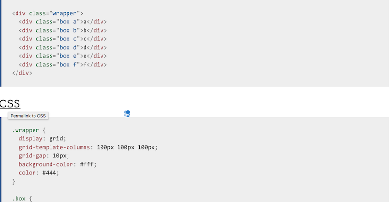

Es una especificación de W3C diseñada que proporciona un método de forma bi-dimensional en la creación de maquetación CSS, y ofrece la posibilidad de crear elementos de la página con el uso de lineas e columnas. También puede ser usado para obtener muchos estilos de maquetación. Una caracteristica de este método es la creación de layouts mediante la división de grandes regiones y de definir su relacion en medidas, posición de capas entre los diferentes componentes del diseño HTML.
Imagen de una estructura basica de CSS-GRIDhttps://developer.mozilla.org/pt-BR/docs/Web/CSS/CSS_Grid_Layout